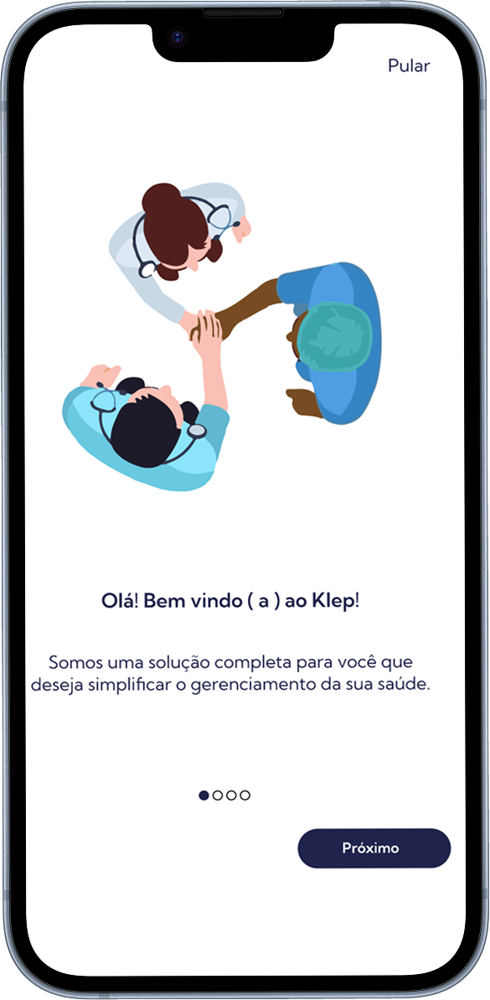
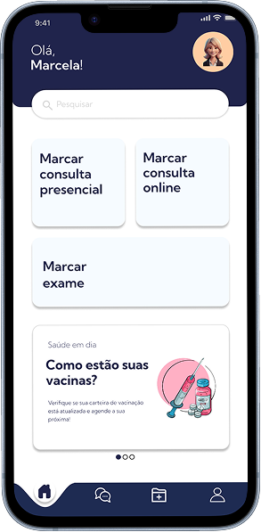
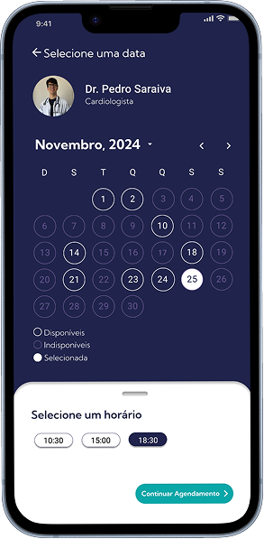
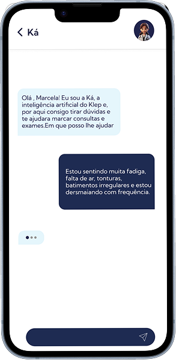
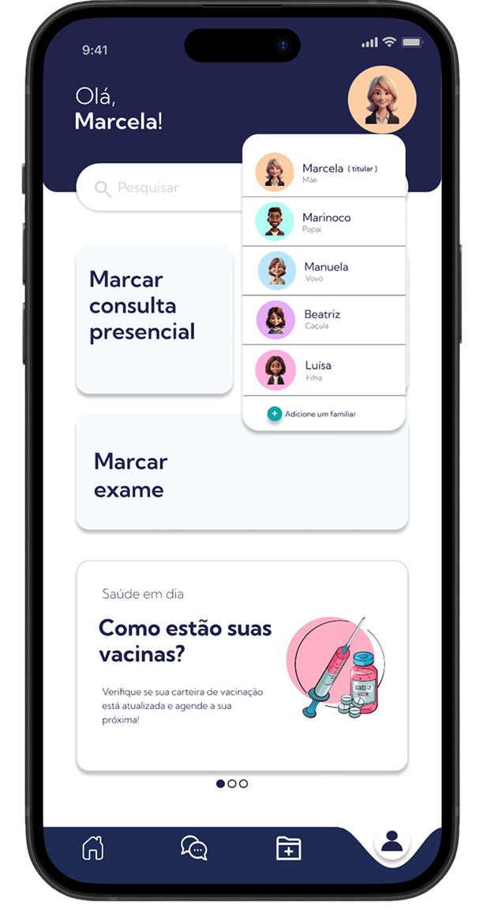
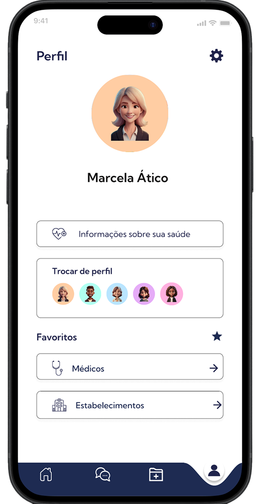
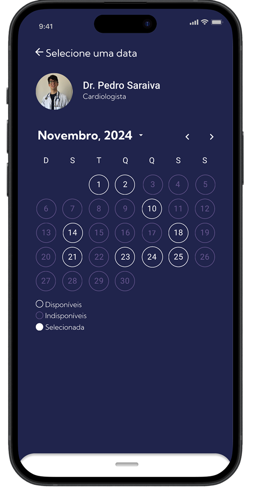

KLEP
Gestão da saúde familiar
Aplicativo mobile que centraliza o agendamento e gerenciamento de consultas e exames, oferecendo mais autonomia para famílias acompanharem sua rotina de saúde de forma simples, organizada e acessível.




Como facilitar a gestão da saúde de toda uma família?
Atualmente, o agendamento de consultas e exames acontece por diferentes canais, como WhatsApp, telefone, sites e aplicativos independentes. Além da fragmentação das informações, usuários precisam acompanhar múltiplos familiares, horários, especialidades e exames em diferentes ambientes.
Essa realidade torna o gerenciamento da saúde mais complexo, especialmente para pessoas responsáveis pelo acompanhamento de filhos, pais ou outros dependentes.
O OBJETIVO
Desenvolver uma solução capaz de centralizar consultas, exames e históricos médicos em uma única plataforma, proporcionando uma experiência simples, intuitiva e segura.
Entendendo os hábitos de agendamento em saúde
Antes de iniciar o desenvolvimento da solução, investigamos como as pessoas realizam seus agendamentos médicos atualmente e quais dificuldades enfrentam durante esse processo.
INSIGHT 01
A praticidade é o principal motivador
A maioria dos usuários prefere realizar agendamentos online devido à rapidez e conveniência.
INSIGHT 02
Falta de centralização gera dificuldades
Os participantes relataram dificuldades para localizar informações, acompanhar históricos e gerenciar diferentes membros da família.
INSIGHT 03
WhatsApp ainda é o canal predominante
Mesmo com aplicativos disponíveis, muitos usuários utilizam o WhatsApp para marcar consultas e exames.
INSIGHT 04
Usuários valorizam simplicidade
Em um contexto de saúde, interfaces complexas aumentam a insegurança e o esforço cognitivo.
Como transformar essas descobertas em produto?
PERGUNTA CHAVE 01
Como permitir que uma única pessoa gerencie a saúde de toda a família?
PERGUNTA CHAVE 02
Como reduzir erros em ações importantes como cancelamentos e remarcações?
PERGUNTA CHAVE 03
Como tornar os fluxos mais intuitivos para usuários com diferentes níveis de familiaridade tecnológica?
Decisões tomadas
DECISÃO 01
Centralizar perfis familiares em uma única conta.
DECISÃO 02
Criar fluxos simplificados para consultas e exames.
DECISÃO 03
Utilizar linguagem familiar e acessível.
DECISÃO 04
Implementar mecanismos de prevenção de erros.
DECISÃO 05
Priorizar clareza visual e consistência.
A experiência principal
Selecionar membro
O usuário escolhe qual perfil deseja gerenciar.
Buscar especialista
Filtra profissionais e laboratórios.
Agendar
Seleciona data e horário disponíveis.
Acompanhar
Visualiza consultas e exames agendados.
Alterar ou cancelar
Gerencia alterações de forma segura.
Heurísticas aplicadas
Visibilidade do estado do sistema
Feedbacks claros para ações concluídas.
Compatibilidade com o mundo real
Linguagem familiar e ícones reconhecíveis.
Controle e liberdade do usuário
Possibilidade de cancelar e desfazer ações.
Prevenção de erros
Confirmações antes de ações críticas.
Consistência e padronização
Mesma lógica visual em todo o sistema.
Transformando a estratégia em interface
Com a arquitetura definida, desenvolvemos protótipos navegáveis de alta fidelidade para validar os principais fluxos do produto.
Validando a experiência com usuários reais
Para avaliar a eficiência dos fluxos desenvolvidos, realizamos testes moderados de usabilidade com oito participantes de diferentes perfis. Os testes incluíram tarefas relacionadas a login, agendamento, remarcação e troca de perfil familiar.
Resultados
8
Usuários entrevistados
Validação com diferentes perfis e níveis de experiência tecnológica.
100%
De conclusão no fluxo do login
Todos os participantes conseguiram acessar o sistema sem dificuldades.
Alta
Aceitação da proposta familiar
A gestão integrada da saúde foi considerada um dos principais diferenciais do produto.
Principais aprendizados
APRENDIZADO 01
A gestão familiar foi muito bem recebida
Os participantes destacaram a praticidade de gerenciar vários membros da família em um único ambiente.
APRENDIZADO 02
A remarcação gerou dificuldades
A principal barreira estava em localizar os agendamentos familiares.
APRENDIZADO 03
Alguns ícones não eram suficientemente claros
Usuários tiveram dificuldade em identificar determinadas áreas apenas pelos ícones.
APRENDIZADO 04
A simplicidade visual foi elogiada
A interface foi descrita como prática, intuitiva e agradável.
Iterações
A validação revelou oportunidades importantes de evolução.
Navegação
- Inclusão de rótulos nos ícones do menu.
- Maior destaque para agendamentos familiares.
Gestão de perfis
- Troca de perfil mais visível.
- Melhor identificação dos membros da família.
Remarcação
- Substituição do termo 'Editar' por 'Remarcar'.
- Criação de botão específico para a ação.
Acessibilidade
- Ajustes tipográficos para melhorar legibilidade.
Funcionalidades principais



Vamos criar algo incrível juntos?
Estou sempre aberta a novos desafios e colaborações. Me conta!